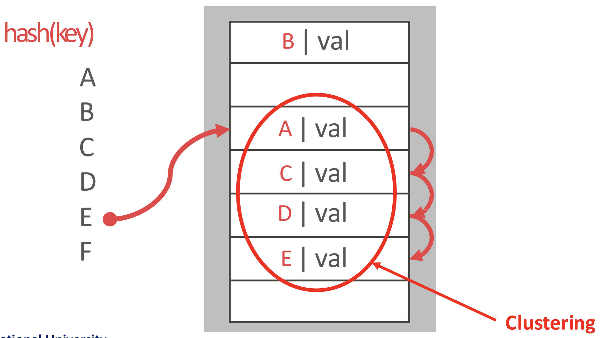
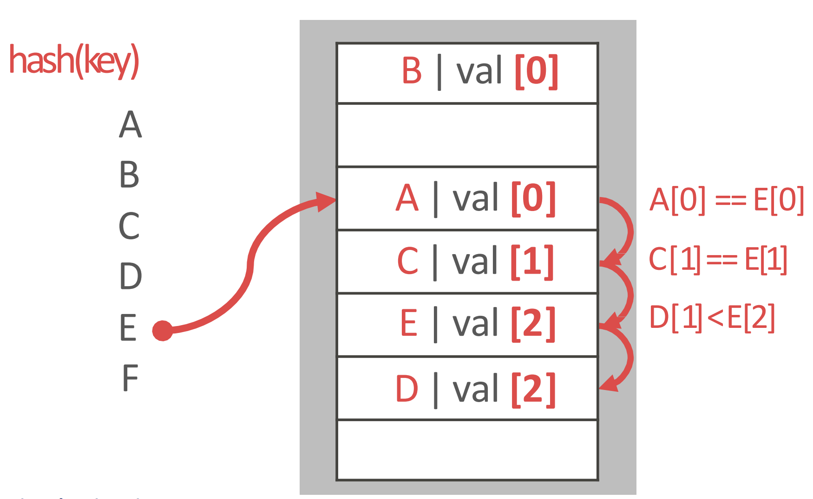
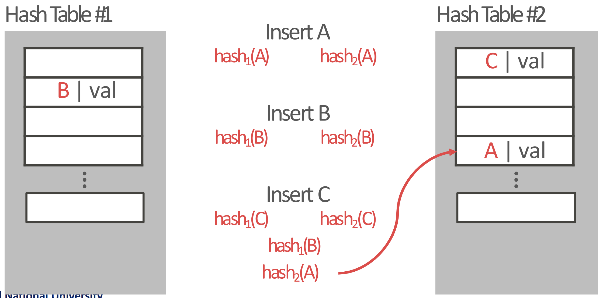
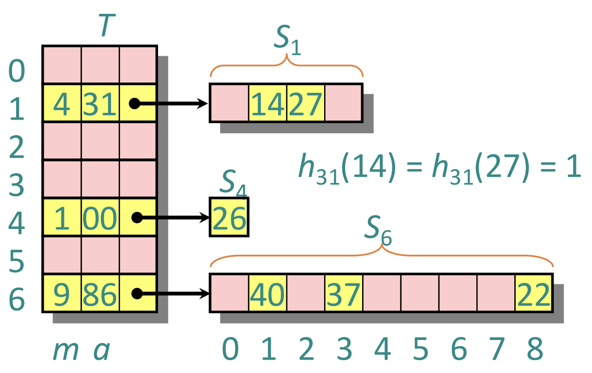

서울대학교 데이터사이언스대학원 정형수 교수님의 "데이터사이언스 응용을 위한 빅데이터 및 지식 관리 시스템" 강의를 필기한 내용입니다.
Access Methods (AM)
- Access Methods (AM): Index 를 관리하는 layer 이다.
- 코드상으로도
am_prefix 를 많이 붙인다.
- 코드상으로도
- Search key 를 가지고 RID 를 찾는 것이 핵심 목적이다.
- 이 RID 에서 tag (
filename + page_id) 로 buffer pool 을 뒤진 뒤 없으면 disk 에서 읽어서 buffer pool 로 올려서 가져오는 것 - 즉, key 를 가지고 이 RID 만 알아낼 수 있으면 그 다음부터는 이 아래의 layer 에서 다 해주는거다.
- 이 RID 에서 tag (
- AM 에서의 design decision 은 다음의 두 개가 있다:
- Data organization (Layout): 빠르게 갖고오기 위해서는 메모리 상에 어떻게 데이터 구조를 가져가고, 어떤 metadata 를 관리해야 하는가
- Concurrency: 여러 client 가 접근할 때, correctness 를 어떻게 보장할 것인가
- “찾는거” 는 무조건 뭐다? Hash table 아니면 tree 다~
Hash table
- One value lookup 는 hash 만한게 없다. 하지만 DB 의 index 에서는 range lookup 이 필요하기 때문에 hash table 보다는 b+ tree 를 더 많이 사용하는 것.
- hash 는 기본적으로 randomness 를 깔고가기 때문에 range lookup 이 원론적으로 불가능하다.
- Hash table 에서의 lookup complexity 는 알다시피 시간복잡도는 , 공간복잡도는 가 제일 이상적이다.
- DBMS 에서 hash table 은 key 는 search key (가령 PK), value 는 RID 가 된다.
- 이때 “Key range” 랑 “key 를 저장하는 공간 (table) 의 크기” 는 당연히 table 의 사이즈가 훨씬 작다. 그래서 같은 entry 로 진입하는 애들에 대해 collision 이 발생하는 것이 당연하다.
- 그리고 hash table 에서는 이 collision 을 효율적으로 처리하는 것이 가장 핵심이다.
- Collision 이 너무 많아지면 lookup 이 느려지기 때문.
Type of hash table
- Static hash 는 table size 가 고정되어 있다.
- 이것은 key 의 개수가 몇개인지 알고 있을때만 사용할 수 있다.
- Key 의 개수가 몇개인지 알고 있으면 왜 hash table 을 사용하는지 감이 안올 수도 있다. 그냥 사이즈 N 의 array 에 박아넣으면 되는거 아닌가?
- 근데 hash table 에서는 lookup complexity 가 임을 잊지 말자:
- 저장은 사이즈 N 의 array 로 가능하지만 lookup 은 단순히 저거로는 안된다.
- 그리고 사이즈 N 의 array 를 사용해도 hash func 를 돌린 후 table size 로 modular 연산을 하면 collition 이 발생할 수 있다.
- 따라서 N 개의 key 로 value 를 에 lookup 하는 것은 당연히 collision handling 을 위한 hash scheme 이 필요하다.
- Dynamic hash 는 table size 가 고정되어 있지 않고, 이떄문에 중간에 re-hash 가 발생할 수 있다.
- Static 은 JOIN 에서 사용, 보통 index 용도로는 dynamic 을 사용한다고 한다.
- JOIN 에서는 key 들을 다 알고 있기 때문에 static hash 를 build 하는게 가능하고, 이것을 하는 이유는 JOIN 에서 cartesian product 할 때 한쪽을 hash table 로 만들어 반대쪽이랑 연결지어줄 때 lookup 을 에 하기 위해서이다.
Hash function, Hash table
- Key 를 hash function 으로 일련의 연산을 한 다음 table size 로 modular 해서 entry 를 찾아가는 것이 가장 기본이다.
- 이때 “일련의 연산” 은 randomness 를 최대로 하는 것에 맞춰져 있다.
- 왜냐면 그래야 collision 을 그나마라도 줄일 수 있으니까.
- 이상적인 hash 는 key 가 다르면 hash 도 달라지는 것이다.
- 하지만 hash table 에서 사용하는 hash function 은 어쩔 수 없게도 그렇지 않고, collision 해결이 중요하다.
- 가령 (아직까지는 collision 이 보고되지 않은) SHA-256 의 경우에는 결과가 256bit, 즉 hash table 의 entry 가 개 여야 한다.
- 또한 이런 hash function 은 DBMS 에서 사용하기에는 너무 느리다.
- Hash table 에서 design decision 은 (1) 어떻게 hash 를 계산하느냐 (hash function) 와 (2) collision 때 어떻게 할 것이냐 (hash scheme) 가 있는데,
- (1) 은 별로 중요하지 않다: 이건 이미 다 연구가 되어 있다.
- 중요한건 (2) 이다.
- 보통은 hash table 에는 unique key 만 들어간다고 가정하지만, duplicated key 를 지원할 때는
- 별도의 value list 를 관리하거나
- 아니면 그냥 hash table 에 다 때려박는 수도 있다고 한다.
- 근데 그럼 어떤 value 가 맞는지 어떻게 알지?
Linear probe

- collision 시에 hash table 에서 빈 slot 이 나올 때까지 다음 slot 을 찾아간 다음 넣기
- collision 된 애들이 다른 slot 에 들어갔다는 얘기는 hash func 결과 해당 slot 으로 진입한 애들도 거기에 저장되지 못하고 빈 slot 을 찾아 떠난다는 것이다.
- 그래서 시간이 지나면 이런 collision 된 애들이 군집 (clustering) 을 이룬다
- 이 cluster 에 대해서는 무조건 collision 이 되긴 하지만 보통 cache 로 올릴때는 prefetch 하기 때문에 생각보다 성능이 나쁘진 않다고 한다.
- 작년(2023) 에 기발한 hash 방법이 나와 이 clustering 문제를 완화했다
- cluster 를 한번 다 빼서 free slot 을 확보한 다음 cluster 안에 있던 애들을 다시 insert 하면
- 다른 collision 때문에 저 뒤로 밀린 애들이 위로 올라오기 때문에 연관된 데이터들이 더 뭉치게 된다는 아이디어
- 삭제는
- tombstone 을 세우거나
- slot 들을 전부 한칸 올리거나
Robin hood

- linear probing 과 동일한데
- 내가 원래 들어가야 할 slot 과 cluster 로 인해 밀려난 위치 간의 차이를 penalty 로 간주
- penalty 가 적은 놈이 rich, 많은 놈은 poor: 그래서 rich 에 대한 적은 penality 의 이점을 뺏어 poor 에게 준다 라고 해서 로빈후드가 되는 것
- 그래서 insert 시에 penalty 를 계산해 놓고
- 다음 insert 시에 clustering 을 차근차근 내려가면서 penalty 를 비교하며 위치를 찾고 적당한 자리에 들어가며 나머지를 밀어냄
- 위의 예시를 보자.
- 원래는 D 의 penalty 가 1이었는데
- E 가 D 위치까지 밀리게 되면 그때의 penalty 는 2가 된다.
- 그래서 E 의 penalty (2) 가 D 의 penalty (1) 보다 크므로 그 자리에 E 가 들어가고
- D 가 한칸 밀리면서 이놈의 penalty 는 2가 된게 위의 그림이다.
Cuckoo

- Cuckoo 는 뻐꾸기같은 탁란새를 의미한다. 즉, 남의 둥지를 빼앗으면서 원래의 주인은 둥지 밖으로 떨구는 류의 새인데
- Cuckoo algorithm 도 비슷한 아이디어이다: 자리를 빼앗으면서 (robin hood 처럼 밀어내는 것이 아니고) 아예 다시 insert 하도록 떨궈버린다.
- 이 아이디어는 이상적인 hash (time: , space: ) 에 거의 근접하다고 한다.
- Open source 로 공개되었고, 요즘은 거의 de-facto 가 되어 많이들 사용한다고 한다.
- 그래서 어떻게 작동하냐면
- 다른 hash func 를 사용하는 hash table 두개를 사용하고
- Insert 를 할 때 둘 다 hash func 를 돌려서 둘 중 하나에 자리가 있으면 거기 넣고
- 만약에 자리가 없으면 하나를 빼서 넣은 뒤 빠진 놈은 다시 insert 과정을 한다.
- 즉, 빠진 놈도 hash func 두개를 돌려서 자리를 찾아간다는 것.
- 위의 예시를 보자.
- 여기에서는 C 가 들어갈 때, 자리가 없어서 B 를 빼앗은 것이고,
- B 를 다시 넣을 때는 자리가 없어서 A 를 빼앗았고,
- A 가 결국에 다른 자리를 찾아아게 된 상황이다.
- 뺸놈을 다시 insert 했을 때는 table 1, 2 에서 다른 곳으로 찾아갈 확률이 높다.
- 왜냐면 이 빠진 놈은 hash func 를 돌릴 두번의 기회 중 하나만을 사용했을 가능성이 있기 때문
- 즉, 이놈이 insert 될 당시에는 양 hash table 에 모두 자리가 있었을 가능성이 있기 때문이다.
- 따라서 지금 들어오는 놈은 양쪽 모두에 자리가 없는게 확정인데 빠지는 놈은 나머지 한 쪽에는 자리가 있을 가능성이 있으니 너가 저기로 가라 이말이다.
- 다만 이 빼앗는 과정이 좀 길게 이어질 수는 있다.
- 빠진 놈도 알고보니 2번의 기회를 다 썼고, 그래서 또 누군가를 뺏어서 들어가고 하는 과정이 좀 길게 이어질 수 있다는 것.
- 그리고 loop 이 있을 수 있다.
- 만약 가 들어갈 위치 , 와
- 가 들어갈 위치 , 에 대해 , 일 가능성이 매우 작긴 하지만 없지는 않다.
- 그럼 이때는 re-shuffling 을 한다. 즉, hash table 하나에 대한 hash func 를 다른걸로 교체해 이 hash table 에 있던애들을 전부 재배치한다.
- 왜냐면 이 빠진 놈은 hash func 를 돌릴 두번의 기회 중 하나만을 사용했을 가능성이 있기 때문
Perfect
이해 부족
- 여기는 주인장 이해가 좀 부족합니다.

- Key 의 개수 와 slot 의 크기 에 대해
- 두 key 간에 collision 이니까 두 key pair 를 선택하는 경우의 수는 이고 같은 slot 에 배치될 확률은 이다. 따라서 가 된다.
- Collision 이 안나는 m 은 저 수식이 상수가 되게 하는 값이고 따라서 대략 개 이다.
- 근데 이건 너무 많기 때문에 일단 작은 크기의 hash table 을 사용하고, collision 난 놈들에 대해 짜리의 2-level hash 를 가져가면 2-level 에 대해서는 collision 이 안난다는 계산이다.
- 근데 문제는 모든 key 를 알고 있어야 하기 때문에 실제로 사용되지는 못한다.